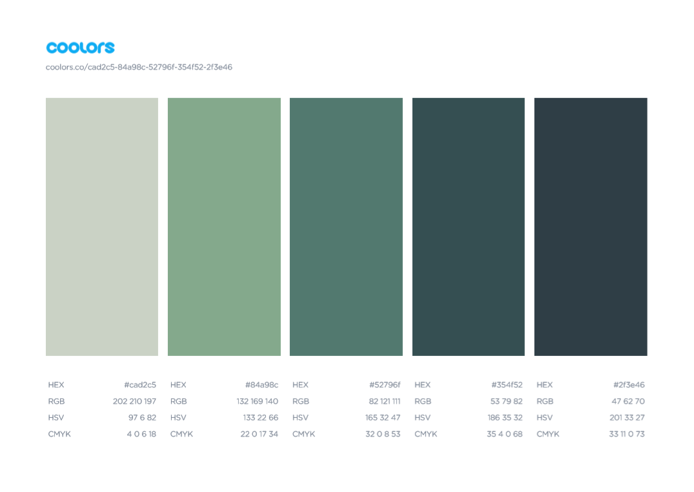

This site has the color scheme that will be used for the final Weather Streak site applied to it as a reference sample.
The page header and footer will use the have a background color of #2f3e45 and a text color of #cad2c5.
The footer's last updated info will have a text color of #84a98c.
The navigation bar will use the following colors
- It will have a default background color of #354f52 and a text color of #cad2c5
- The selected navigation item will have a background color of #52796f and a text color of #cad2c5
- The navigation item hover state will have a background color of #84a98c and a text color of #2f3e46
The body will have a background color of #cad2c5 and a text color of #ffffff
Headers in the body will have the text color of #354f52
Source https://coolors.co/cad2c5-84a98c-52796f-354f52-2f3e46